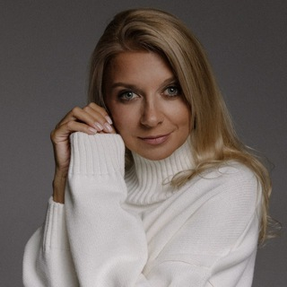

Ответьте на 5 вопросов. Вы получите свой тип тревоги и одну технику под него, которую можно сделать прямо сейчас, на этой странице
Это не диагноз, а подсказка, с чего начать
Техника снимает тревогу здесь и сейчас. Но если причину не трогать, тревога возвращается, и с каждым разом ей нужно всё меньше повода. Сегодня её запускает отчёт, через месяц любое сообщение от начальника
«Шаги есть. Но честно, сама по себе инструкция не работает»
Первым реагирует тело. Плохо спится, зажаты плечи и челюсть, болит голова, сбоит желудок, сердце стучит без причины. Тело живёт так, будто опасность рядом всегда
Потом тревога начинает решать за вас. Вы откладываете разговор, не идёте на собеседование, не меняете то, что давно хочется поменять. Не от лени, а потому что тревога сковывает
Это навык, а не черта характера. В КПТ мы находим мысль, которая запускает тревогу, и учимся с ней обращаться. Уже за одну-две консультации можно понять, откуда она берётся, и начать действовать
Эти техники помогают справляться с тревогой самостоятельно. Если тревожность сильно влияет на качество жизни, обратитесь к специалисту